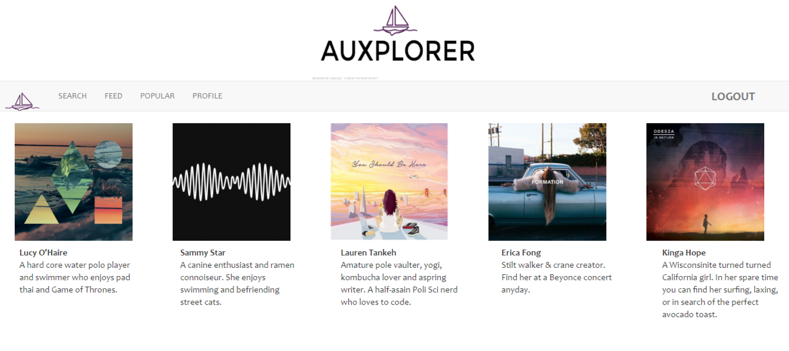

Auxplorer was created by myself and a group of 3 other students in the Girls Who Code Summer Immersion program in 2016. This was my first web development project and I got to learn so much about all the possibilites with code, how to work with others and my interests in CS!
We had just a week to ideate and complete this project. At first, we all had many ideas about the direction of the project and what technologies we wanted to use. After about a full day of brainstorming, we all agreed on something we had in common - music!
The idea for Auxplorer was that it wouldn't just be a place to play music such as other platforms like Spotify, Pandora or 8tracks, but really be focused on finding new music and communities that shared interests. We had each user have a profile that would feature their favorite music/playlists. Users will be able to search genres, moods or artists to find similar music. There is also a timeline/newsfeed of updates friends make to their music profiles. From this newsfeed, users will be able to explore the music their friends are listening to and connect to them in that way. Through pages such as the popular page and on through playlists under the various tags, users will be able to see what other users are listening to the same thing.

My main role on this project was working on the frontend aspect, stitching together everyone else's portions into the interactive interface. I learned HTML, CSS and JavaScript to create the layout and design of the webpage. I also helped the others with their portions. One challenge was using jQuery to create a local database of our users and their passwords. None of us had experience with this before but lots of help from our mentors and Google helped us succeed! Unfortunately, all of us were also very new to GitHub and I wasn't able to recover our final version of the site.